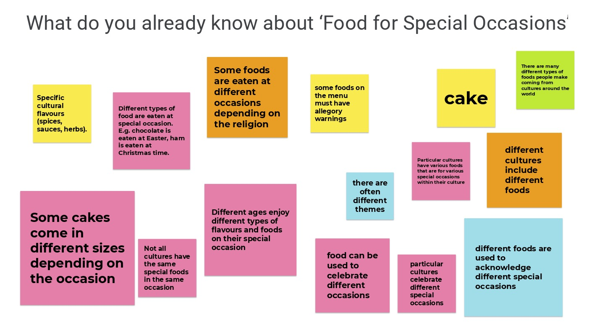
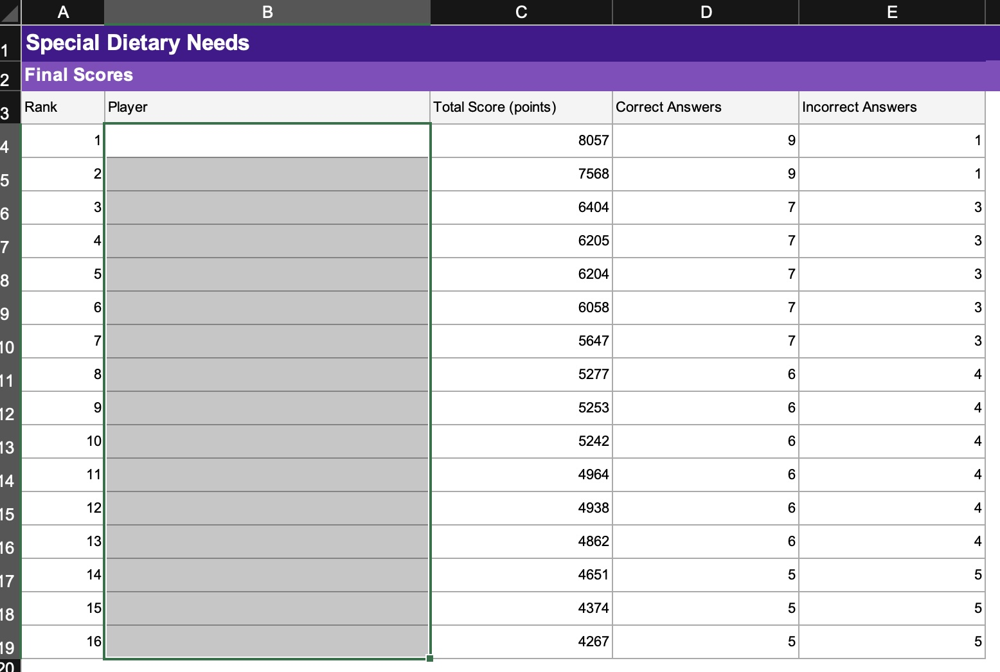

Assessment Samples
Throughout my professional placements I have demonstrated the teaching of content through a range of different assessments, including summative, formative and diagnostic.
Diagnostic Assessment
A diagnostic assessment is conducted at the start of a lesson to find out what students already know about a topic.An example from my own lesson:
At the start of a new term, a year 9 food technology class were starting a new syllabus topic. I got students to use a shared Jamboard. and tell me what they already knew about the "food for special occassions" topic as well as what they would like to know.
 This allowed me as the teacher to know what I needed to focus more time on when preparing lesson content.
Formative Assessment
Formative assessment is a process that involves the continuous use of information about students' knowledge, understanding and skills to target teaching and address individual students learning needs. Formative assessment provides teachers and students with opportunities for feedback throughout the teaching and learning experience while also providing evidence about progress to inform the next steps in learning. (NESA, n.d)An example from my own lesson:
I created a compare on contrast, that focused on food cuisines. First students would highlight the example then they in a group would write their own and lastly, they would individually write another and submit their response via Google Classroom to get marked.
This allowed me to see where they were at with their literacy and allowed their regular teacher to keep track of progress based upon other submissions that were of similar style to this one. The teacher could also then further the compare and contrast task if needed or if improvement had been substantial, move on to the next topic.
Summative Assessment
A Summative assessment provides evidence of student learning to inform teacher judgements about achievement in relation to the syllabus, and performance standards (NESA, n.d). I can be used to report to teachers, students or parents, the successfulness of learning and application of knowledge. It can also assist teachers in knowing what needs more work.An example from my own lesson:
At the end of term, students played a specific Kahoot quiz that I made with relevant questions to the syllabus content and outcomes they had been learning about. At the end of the Kahoot, I downloaded the statistics that told me how many questions each student got correct as shown below. The statistics go into more detail about which questions students got wrong.
 This allowed me as the teacher to know what each specific student knew by the end of the term and what i needed to go over for the revision lessons set for the exam next term.